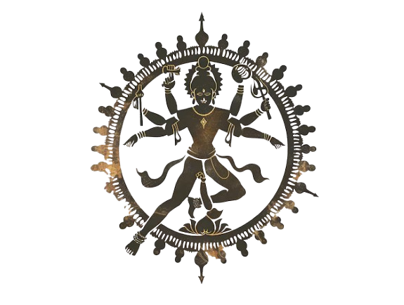

Origins of Jainism
Jainism is one of the world's oldest religious traditions, tracing its roots to at least 3000 BCE, with evidence suggesting links to the Indus Valley Civilization. Jain doctrines were formalized through the teachings of 24 Tirthankaras, spiritual masters who achieved enlightenment.
The 24 Tirthankaras

Rishabhanatha
The first Tirthankara, mentioned in Hindu and Jain texts.
Mahavira
The 24th and most well-known Tirthankara, who refined Jain teachings.
Core Beliefs of Jainism

Ahimsa (Non-Violence)
The foundation of Jainism, extending to thought, speech, and action.
Anekantavada (Multiple Truths)
Truth is multifaceted; no single perspective captures reality.
Aparigraha (Non-Possessiveness)
Detachment from material desires leads to spiritual liberation.